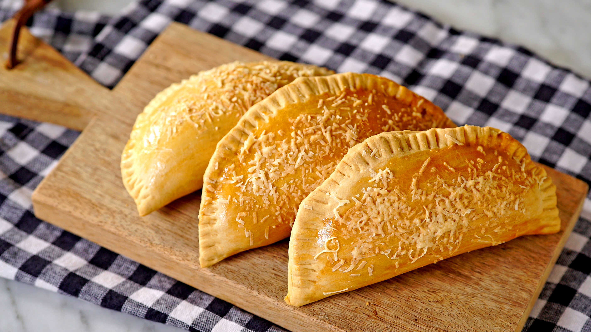

Receita de Pastel de Forno

- Pule para "Ingredientes"
- Modo de preparo"
Receita:
Ingredientes:
- 3 xícaras (chá) de farinha de trigo
- 1 ovo
- 1 colher (chá) de sal
- 1 colher (sopa) de vinagre
- 1 gema para pincelar
- 1 xícara de água morna
- recheio de sua preferência
Modo de Preparo:
- Em uma vasilha, misture a farinha, a margarina, o ovo, o sal e o vinagre.
- Amasse bem até a massa obter uma massa homogênea.
- Envolva a massa em papel filme ou saco plástico e leve à geladeira por 30 minutos.
- Abra a massa com o rolo em uma superfície plana e enfarinhada, corte-a em 20 pedaços, distribua o recheio, feche os pastéis e pincele com a gema.
- Asse em forno médio (180° C), preaquecido, por 40 minutos.
voltar